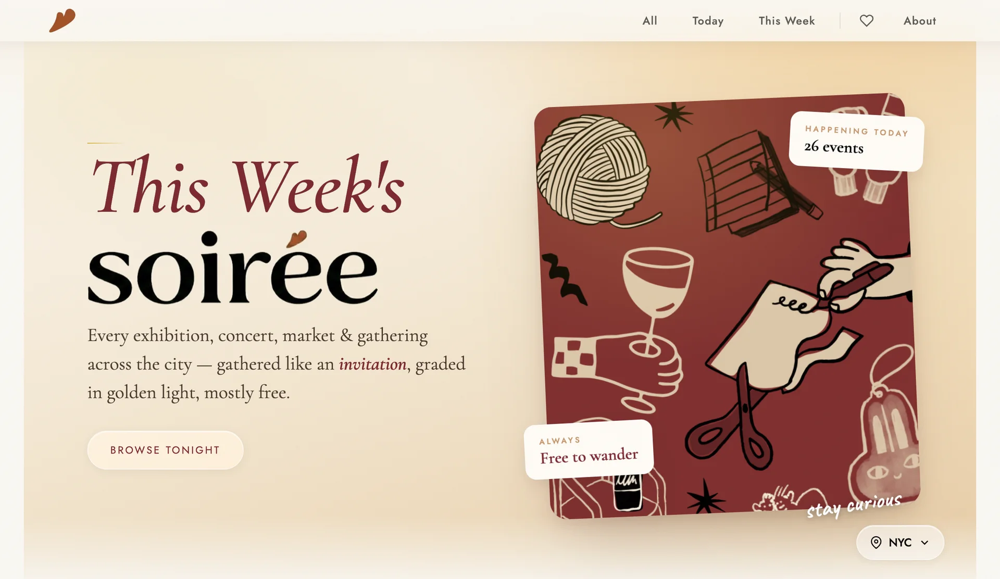

Tonight’s events in NYC,
Hoboken, and Philadelphia.
Soirée scrapes event listings, fixes their dates, and shows what’s on tonight.
135
events listedas of Nov 15, 2026
55
of them freepriced as free
24
sourcesas of Nov 15, 2026
3
regionsNYC, New Jersey, Philadelphia

the problem
Most listings had no real date.
When Soirée started, fewer than half the scraped events carried a real date. Many sources post recurring or open-ended listings with none.
the build
Real dates first, placeholders marked ongoing.
Events with real dates sort first. Placeholder dates render as ongoing and are marked past, with history kept, once they vanish from their source.
beforeSep 12(placeholder)sorted as if it were a real day
afterongoingsorted after every real date
the run
One scraper per source.
The feed read on Nov 15, 2026 carries 24 sources, among them the Whitney, the New Museum, the Brooklyn Botanic Garden, NJPAC, Barrow Mansion in Jersey City and the Hoboken Historical Museum. Each scraper has its own success-rate target and timeout.
the proof
One-night events, read from soiree.today.
Read Nov 15, 2026
- Chakrasambra MeditationBarrow Mansion · Jersey City · Nov 15, 11:30 AM
- Bruce Hornsby with Christian McBride: One on OneNew Jersey Performing Arts Center · Newark · Nov 15, 3 PM
- Closing Weekend - Cat, Stick, Easel, Moon: Surrealist Paintings by Rachel L BedderSMUSH Gallery · Jersey City · Nov 15
the call
Say “ongoing” rather than guess a day.
A listing without a real date still shows, but never as tonight.
- Browse bytonight · today · this week · free only
- Moodsart · perks & pop-ups · culture & community
- Runs onNode.js · Cloudflare · scheduled scrapers